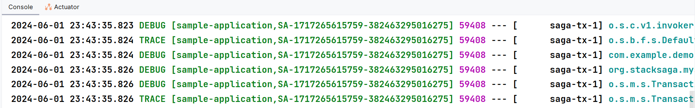

StackSaga Demo (Core concept practice)
Overview
In this demo, we are focusing on how to implement the StackSaga things in the spring boot in microservice architecture.
IF you are new to StackSaga, it is recommended to read the architecture and reference documentation for reading individual components.
In this example, we have 4 utility microservices called order-service, user-service, payment-service, and stock-service. in addition to that,
Spring Cloud Api Gateway is used as the proxy server and as well as the Application Load Balancer (ALB).
and also Eureka Discovery is used for service registry.
The use-case is that the clients can place an order, and then the order request should be completed go through these 4 services.
Each services' responsibilities as follows.
order-service
|
Order service is responsible for accepting the place order request and managing the entire transaction as the orchestrator. and also as a utility service, the service is responsible for storing the order related specific data in the order-service database. According to this use-case, This is the service that stacksaga is added. |
user-service
|
To make the process we want to have the user details like delivery address.
|
payment-service
|
In the placing order process, the utility
|
stock-service
|
After making the pre-auth process, we should update the real stock.
|
All the services that we are going to build.
-
API-cloud-gateway
-
eureka-service
-
utility services
-
order-service
-
user-service
-
stock-service
-
payment-service
-
Additionally stacksaga-admin-dashboard is run for monitoring the transactions.
source code is available on //[Github].
This guide is divided into 3 sections for your convenience.
- [1] Implementation
-
Guides for implementing all java classes. (focus the StackSaga concepts)
- [2] Deployment
-
Guides for creating and connecting The API-gateway and eureka service with utility services with all the configurations.
- [3] Testing
-
Testing the application by running all the applications together.
High-level Implementation Diagram.
Here you can see what we are going to build in High-level.

-
In the diagram, StackSaga icons
 are shown which parts StackSaga interact.
are shown which parts StackSaga interact. -
Red lines are shown how the StackSaga Admin interacts with the process and the request-flow.
-
Black lines are shown how the regular http requests are done.
Implementation
As the first step, we are going to create the Orchestrator Service called order-service.
|
Even if there are 4 utility services in the diagram, we mainly focus the order service only.
Other services are traditional spring boot services, and there is nothing to discuss. You can download the full source code from //here. |
Create Order-Service (Orchestrator Service)
The order-service is little bit special than the other utility services, because the order-service is the responsible for managing the entire transaction here.
That’s why it called as Orchestrator Service.
And the next reason is that StackSaga involves that kind of service in your entire system.
Selecting a service as an Orchestrator service or not depends on your requirement.
Create order the project with spring initializer
Go to the spring initializer and create your project with the following Dependencies.
-
spring-boot-starter-web -
spring-cloud-starter-netflix-eureka-client -
spring-boot-starter-data-jpa -
mysql-connector-java -
spring-cloud-starter-loadbalancer -
lombok
Due to that we are using eureka for service registry, we can use spring-cloud-starter-loadbalancer for internal client side load balancing.
Due to we use just RestTemplate as the httpclient we have to annotate by @LoadBalanced annotation.[ RestTemplateConfig ] |
After creating your project, add the StackSaga dependencies in the dependencies section. There are 3 dependencies to be added based on your implementation.
-
You can add the
stacksaga-spring-boot-starterdependency based on the spring version that you wish to use. In this example, we will be using spring2.X.- Spring 2.X
-
<dependency> <groupId>org.stacksaga</groupId> <artifactId>stacksaga-spring-boot-2-starter</artifactId> <version>1.0.0</version> </dependency> - Spring 3.X
-
<dependency> <groupId>org.stacksaga</groupId> <artifactId>stacksaga-spring-boot-3-starter</artifactId> <version>1.0.0</version> </dependency>
-
Due to the database has been selected as Mysql, you have to add
stacksaga-mysql-supportdependency.<dependency> <groupId>org.stacksaga</groupId> <artifactId>stacksaga-mysql-support</artifactId> <version>1.0.0</version> </dependency> -
Due to we are going to Eureka as the discovery service, you have to add
stacksaga-connect-k8s-supportdependency.<dependency> <groupId>org.stacksaga</groupId> <artifactId>stacksaga-connect-eureka-support</artifactId> <version>1.0.0</version> </dependency>
Finally, the pom.xml file will be like below.
<?xml version="1.0" encoding="UTF-8"?>
<project xmlns="http://maven.apache.org/POM/4.0.0"
xmlns:xsi="http://www.w3.org/2001/XMLSchema-instance"
xsi:schemaLocation="http://maven.apache.org/POM/4.0.0 http://maven.apache.org/xsd/maven-4.0.0.xsd">
<modelVersion>4.0.0</modelVersion>
<parent>
<groupId>org.springframework.boot</groupId>
<artifactId>spring-boot-starter-parent</artifactId>
<version>2.7.0</version>
<relativePath/> <!-- lookup parent from repository -->
</parent>
<groupId>org.example</groupId>
<artifactId>order-service</artifactId>
<version>1.0-SNAPSHOT</version>
<properties>
<maven.compiler.source>8</maven.compiler.source>
<maven.compiler.target>8</maven.compiler.target>
<project.build.sourceEncoding>UTF-8</project.build.sourceEncoding>
<spring-cloud.version>2021.0.3</spring-cloud.version>
</properties>
<dependencies>
...
...
<!--othe dependencies-->
<!--StackSaga related dependacies -->
<dependency>
<groupId>org.stacksaga</groupId>
<artifactId>stacksaga-spring-boot-2-starter</artifactId>
<version>1.0.0</version>
</dependency>
<dependency>
<groupId>org.stacksaga</groupId>
<artifactId>stacksaga-mysql-support</artifactId>
<version>1.0.0</version>
</dependency>
<dependency>
<groupId>org.stacksaga</groupId>
<artifactId>stacksaga-connect-eureka-support</artifactId>
<version>1.0.0</version>
</dependency>
</dependencies>
</project>| Updating the configuration files related stuff will be discussed at the Deployment section. |
Order-Service Overview.
You know that we have to access more services besides this order-service to fully complete the entire place-order request.
To access those services in general, you would use service-layer and call those services manually by using any httpclient like RestTemplate, Feign client, Okhttp, and so on.
Instead of that manual unorganized way, StackSaga offers better wrapper blocks for each execution.
It is called as executors.
Read the reference documentation to have a better understanding and best practices regarding the
SagaExecutors.
According to the Saga design pattern, you know that we should have a Compensating process for all the execution (All the executions that make some changes in a database). Due to the fact that the StackSaga framework is one of Saga implementations, it should be provided the primary execution and also a Compensating execution to make a Compensating when the entire process is failed at any point.
Based on having a Compensating or not, the executors are two types called command-executor and query-executor.
command-executor have both primary execution and the Compensating execution.
If it is query-executor, it has only primary execution.
How StackSaga combines with Controller Service and Repository architecture?
In spring applications we follow controller, service and repository layered architecture.
StackSaga suggest another middle layer between the controller layer and the service layer called executor-layer.
The executor-layer is the place the executors are created.
Let’s see step by step how StackSaga involves the process.
Here you can see the entire process in a diagram from based on the order-service (orchestrator-service).

In brief, The client makes an order place request and the request comes to the order-service via the api-cloud-gateway.
And then we initialize a special object called Aggregator
and it is handed over to the SEC (Saga Execution coordinator), and the SEC will handle the entire execution by executing each every atomic execution.
The atomic executions have been provided inside the executors.
Here you can see the summarized table for your convenience.
| Executor Class Name | Execution_Requirement | Target_Service | Type | Process-Execution | Revert-Execution |
|---|---|---|---|---|---|
Fetch the user’s details |
|
QUERY_EXECUTOR |
|
- |
|
Initialize the order at the first. |
|
COMMAND_EXECUTOR |
|
|
|
Make the Pre-Auth process. |
|
COMMAND_EXECUTOR |
|
|
|
Update the stock from the store. |
|
COMMAND_EXECUTOR |
|
|
|
Finalize the order by making the real payment. |
|
COMMAND_EXECUTOR |
|
? |
Creating the aggregator
You know that the request comes to the order-service at the first (for downstream services), and it tries to handle the entire request by calling to other utility services.
To start the execute the request, the order-service should have an Aggregator class that extend from the SagaAggregator class.
And as well as to verify the aggregator object is serializable well or not, we should provide a sagaSerializable's implementation.
Read the reference documentation to have a better understanding and best practices regarding the
SagaAggregator.
package org.example.aggregator;
import com.fasterxml.jackson.annotation.JsonProperty;
import lombok.Getter;
import lombok.Setter;
import org.example.aggregator.dto.OrderItem;
import org.stacksaga.Aggregator;
import org.stacksaga.SagaSerializable;
import org.stacksaga.core.annotation.SagaAggregator;
import org.stacksaga.core.annotation.SagaAggregatorVersion;
import java.util.List;
@SagaAggregator(
version = @SagaAggregatorVersion(major = 1, minor = 0, patch = 0),
name = "PlaceOrderAggregator",
sagaSerializable = PlaceOrderAggregatorSerializer.class
)
@Getter
@Setter
@ToString
public class PlaceOrderAggregator extends Aggregator {
/**
* The relevant user to the order.
*/
@JsonProperty("user_id")
private String userId;
/**
* The item list that user order.
*/
@JsonProperty("items")
private List<OrderItem> items;
/**
* The amount to be paid.
*/
@JsonProperty("amount")
private Double amount;
/**
* Pre-Auth Reference for release or make the payment.
*/
@JsonProperty("pre_auth_ref")
private String preAuthRef;
/**
* Payment ID after the payment.
*/
@JsonProperty("payment_id")
private String paymentId;
@JsonProperty("executions")
private List<String> executions = new ArrayList<>();
@JsonIgnore
private Boolean hasRevertError = false;
public PlaceOrderAggregator() {
super(PlaceOrderAggregator.class);
}
}
class PlaceOrderAggregatorSerializer extends SagaSerializable<PlaceOrderAggregator> {
public PlaceOrderAggregatorSerializer() {
PlaceOrderAggregator placeOrderAggregator = new PlaceOrderAggregator();
placeOrderAggregator.setUserId("user-1");
placeOrderAggregator.setAmount(100.00);
placeOrderAggregator.setItems(new ArrayList<>());
placeOrderAggregator.getItems()
.add(OrderItem.builder()
.itemId("item-1")
.itemPrice(100.00)
.build()
);
this.put("sample-1", placeOrderAggregator);
}
}
To make the code more readable and clear, I have used lombok
and builder pattern for creating the objects through the demo.
It is not required, and you are free to use the traditional way by creating getters and setters manual.
|
In the PlaceOrderAggregator has the data that we want to access while the entire transaction process.
Those data will be updated time to time from each execution.
Now the aggregator is ready to store and carry out the data throughout the entire process.
Creating OrderController (API Endpoint).
As per the diagram, you know that the request comes to the /order/place endpoint and also the handing over the execution to the stacksaga is happened in this controller class.
@RestController
@RequestMapping("/order")
@RequiredArgsConstructor
public class OrderController {
(1)
private final SagaTemplate<PlaceOrderAggregator> placeOrderAggregatorSagaTemplate;
@PostMapping("/place")
@ResponseStatus(HttpStatus.ACCEPTED)
public PlaceOrderDto.ResponseBody createOrder(@RequestBody PlaceOrderDto.RequestBody requestBody) {
(2)
final PlaceOrderAggregator placeOrderAggregator = new PlaceOrderAggregator();
placeOrderAggregator.setUserId(requestBody.getUserId());
placeOrderAggregator.setItems(requestBody.getItems());
placeOrderAggregator.setAmount(
requestBody.getItems()
.stream()
.map(orderItem -> orderItem.getItemPrice() * orderItem.getQty())
.mapToDouble(Double::doubleValue)
.sum()
);
placeOrderAggregator.setHasRevertError(requestBody.getHasRevertError());
placeOrderAggregator.getExecutions().add("INIT:" + LocalDateTime.now());
log.debug("placeOrderAggregator:{}", placeOrderAggregator);
(3)
placeOrderAggregatorSagaTemplate.process(
placeOrderAggregator,
UserDetailExecutor.class
);
(4)
return PlaceOrderDto.ResponseBody.builder()
.orderId(placeOrderAggregator.getAggregatorTransactionId())
.message("order has been submitted successfully")
.build();
}
}| 1 | Autowire the SagaTemplate for handing over the execution to the framework.
Your target aggregator class should be provided to the SagaTemplate as a type. |
| 2 | Initialize the PlaceOrderAggregator [] and set the data that should be added initially. In our case, the necessary data that are given from the endpoint are added to the aggregator object. You can see the initialized data at the dashboard like this. |
| 3 | Handing over the execution to the framework by passing the initialized aggregator object, and the executor class that the execution should be started. From here the execution will be handled by the StackSaga execution coordinator (SEC) asynchronously. |
| 4 | Build the response object to the client by using the aggregatorTransactionId.
aggregatorTransactionId can access through your aggregator object due to that id comes from the Aggregator super. |
Related Classes' links
Creating SagaExecutionEventName Implementation (OrderStatus Enum)
All the executions can have an event-name based on the action like topic in kafka.
It is used for identifying the actions in the dashboard.
As an example after making the payment, you can indicate to the SEC the event as MADE_PAYMENT.
In StackSaga framework you can create an enum class by implementing from the SagaExecutionEventName interface.
For our upcoming executors, the following event names will be used.
import org.stacksaga.core.SagaExecutionEventName;
public enum OrderStatus implements SagaExecutionEventName {
INITIALIZED_ORDER,
USER_DETAILS_FETCHED,
CANCELED_ORDER,
MADE_PRE_AUTH,
RELEASED_PRE_AUTH,
UPDATED_STOCK,
RESTORED_STOCK,
MADE_PAYMENT,
REFUNDED_PAYMENT
}Creating UserDetailExecutor
In the OrderController class The UserDetailExecutor has been mentioned as the initial executor.
As per the diagram, you know that executor should be a Query-Executor.
Because the requirement is only fetching the user details.
Fetching user details doesn’t change any data.
(1)
@SagaExecutor(executeFor = "user-service", liveCheck = false, value = "UserDetailExecutor")
@RequiredArgsConstructor
public class UserDetailExecutor implements QueryExecutor<PlaceOrderAggregator> { (2)
(3)
private final UserService userService;
@Override
public ProcessStepManager<PlaceOrderAggregator> doProcess(
PlaceOrderAggregator currentAggregator, (4)
ProcessStepManagerUtil<PlaceOrderAggregator> stepManager (5)
) throws
RetryableExecutorException, NonRetryableExecutorException (6)
{
currentAggregator.getExecutions().add(this.getClass().getSimpleName()+":"+ LocalDateTime.now());
(7)
UserDetailDto.ResponseBody userDetails = this.userService.getUserDetails(currentAggregator.getUserId());
(8)
currentAggregator.setDeliveryDetails(userDetails.getDeliveryDetails());
return stepManager.next(OrderInitializeExecutor.class, OrderStatus.USER_DETAILS_FETCHED); (9)
}
}| 1 | Annotate the UserDetailExecutor class as a SagaExecutor by using @SagaExecutor annotation.
|
| 2 | Implement the UserDetailExecutor from the QueryExecutor by passing the target Aggregator.
|
| 3 | Autowire the UserService
to make the execution by calling the user-service. |
| 4 | you will have the currentAggregator object through the method parameter. due to this executor is the 1st executor, the currentAggregator object contains the initialized values from the OrderController class. |
| 5 | stepManager helps you to navigate the execution to the next executor. |
| 6 | If you throw an exception, that is how the framework knows that the executor has an exception at this moment.
Based on the exception type that you have thrown, The framework decides that the process should be started the revert process or either process should be stopped temporally.
IF the exception is a
|
| 7 | By using the UserService’s getUserDetails() method, fetches the user’s data from user user-service. |
| 8 | After receiving the user’s detail the currentAggregator is updated with user’s details.
Therefore, you can access the user’s detail within the next executor. |
| 9 | By using the stepManager, navigates the execution to the next executor called and the event name marked as USER_DETAILS_FETCHED OrderInitializeExecutor. |
Creating UserService.
Userservice is a regular spring service that creates for calling user-service.
Due to the user-service is another utility service we have to call it through http or any other protocol that target service supports (Most probably API endpoints are exposed by http protocol).
This example’s user-service also support http endpoint to access the API.
Therefore, we will be using rest template as http client.
But you can use any Http client like Feign-client, Okhttp, Spring-webclient and so on.
@Service
@RequiredArgsConstructor
public class UserService {
private final RestTemplate restTemplate;
public UserDetailDto.ResponseBody getUserDetails(String userId)
throws
NonRetryableExecutorException, RetryableExecutorException (1)
{
try {
(2)
UserDetailDto.ResponseBody responseBody = this.restTemplate.getForObject(
"http://user-service/users/{userId}",
UserDetailDto.ResponseBody.class,
userId
);
assert responseBody != null;
return responseBody;
} catch (HttpClientErrorException ex) { (3)
// This exception is thrown for HTTP 4xx errors (Client errors)
// You can handle specific HTTP error codes here
if (ex.getStatusCode().equals(HttpStatus.NOT_FOUND)) {
(4)
throw NonRetryableExecutorException
.buildWith(
new RuntimeException("User not found"),
""
)
.put("reason", "User not found")
.build();
} else {
(5)
throw NonRetryableExecutorException.buildWith(ex, "").build();
}
} catch (HttpServerErrorException ex) { (6)
// This exception is thrown for HTTP 5xx errors (Server errors)
// You can handle specific HTTP error codes here
if (ex.getStatusCode().equals(HttpStatus.INTERNAL_SERVER_ERROR)) {
(7)
throw NonRetryableExecutorException.buildWith(ex, "").build();
} else {
(8)
//502 , 503, 504, 509 etc.
throw RetryableExecutorException.buildWith(ex).build();
}
} catch (RestClientException ex) { (9)
// This exception is a generic RestClientException
// Handle other types of exceptions here
throw ex; (10)
} catch (IllegalArgumentException illegalArgumentException) { (11)
throw RetryableExecutorException.buildWith(illegalArgumentException).build();
} catch (RunT) { (11)
throw RetryableExecutorException.buildWith(illegalArgumentException).build();
}
}
}
Handling the exceptions is the most important task in StackSaga framework.
You have to handle the exception, and decide what should be the NonRetryableExecutorException and what should be the RetryableExecutorException carefully.
For example, in this demo you saw that we handled NOT_FOUND status.
the NOT_FOUND can be thrown if the endpoint not found that you are looking for.
Or otherwise it can be passed if the user does not exist.
Then, if you have not any awareness about what the target service returns, you will not be able to catch the real error.
In this example, we know exactly there is an endpoint /users/{userId} in the user-service therefore no worries.
But be careful if you access third party APIs.
Read the API documentation in detail.
|
| 1 | We have thrown both NonRetryableExecutorException,and RetryableExecutorException that UserDetailExecutor’s doPrcess() method expects.
That’s why it was mentioned in above.
The handling exception part is done in the service layer.
[ Read the TIP ] |
| 2 | Call the http request to the user-service. |
| 3 | Catch the 4xx HTTP errors to determine if the exception is a NonRetryableExecutorException or RetryableExecutorException. |
| 4 | Due to the http error code is equal to NOT_FOUND (404), the process cannot be done anymore.
Therefore, a NonRetryableExecutorException is thrown by wrapping with the real exception.
If you want to put some data based on the exception, you can use the put("key","value") method for that.
The data can be accessed from any revert-exceptions. |
| 5 | Other 4xx errors are thrown as the NonRetryableExecutorException by wrapping the real error. |
| 6 | Catch the 5xx HTTP errors to determine if the exception is a NonRetryableExecutorException or RetryableExecutorException.
Most probably 5xx errors can be retried, but there are some cases it can not. |
| 7 | Check the 5xx error is equal to INTERNAL_SERVER_ERROR.
Because if there is an internal server in this case, we know that we cannot go ahead and the process should be stopped going forward.
Therefore, NonRetryableExecutorException is thrown by wrapping the real letter. |
| 8 | If the 5xx is not equal to INTERNAL_SERVER_ERROR, then other errors like 502, 503, 504, 509 error codes are caught as RetryableExecutorException and therefore a RetryableExecutorException is thrown by wrapping the real exception. |
| 9 | Cathe the other exceptions. |
| 10 | In this example, that other error codes are not considered because we assume that errors cannot be happened.
Therefore, that error just throws without wrapping with NonRetryableExecutorException.
IF you want to wrap, you can do as usual but is not required if you don’t consider those errors.
Because internally the framework wraps the all RuntimeExceptions with NonRetryableExecutorException by default. |
| 11 | Due to we are using spring-cloud-load-balancer, when we make a request via the RestTemplate internally load balancer check is there any registered services in the local cache.
Then, if there is no instance in the cache, it throws and exception with IllegalArgumentException.
But in our case, actuality it is also a retryable exception.
Because when an instance is registered, that execution can be invoked.
Therefore, that error is thrown as RetryableExecutorException. |
| The reason for handling the exception is that this is where the http client does the invocation and the special this is most probably the exceptions are different to each other even though the http status code is the same. |
- Case-1
-
IF you change the Rest-Client (For instance, you move to RestTemplate to Feign-client), all the exceptions are changed. Then you have to change all the codes in the executor if you have handled the exceptions inside the executor. But in this way nothing to do anything.
- Case-2
-
If you have to change the protocol like HttpRest to GRPC, you have nothing to do in the executor layer.
Creating OrderInitializeExecutor
You know that the request comes to the OrderController
and the request is transferred to the UserDetailExecutor as the first step to collect the user details.
And next, we are going to initiate the order in the own service (order-service).
To initiate the order will be creating an executor called OrderInitializeExecutor.
The OrderInitializeExecutor should be a command-executor because the primary execution (updating order database) makes some changes in the database, and then if a failure occurred at some point after executing the order initialization process, it should be recovered again.
(1)
@SagaExecutor(executeFor = "order-service", liveCheck = false, value = "OrderInitializeExecutor")
@RequiredArgsConstructor
public class OrderInitializeExecutor implements CommandExecutor<PlaceOrderAggregator> { (2)
(3)
private final OrderService orderService;
private final ObjectMapper objectMapper;
@Override (4)
public ProcessStepManager<PlaceOrderAggregator> doProcess(PlaceOrderAggregator currentAggregator, ProcessStepManagerUtil<PlaceOrderAggregator> stepManager) throws RetryableExecutorException, NonRetryableExecutorException {
try {
currentAggregator.getExecutions().add(this.getClass().getSimpleName() + ":" + LocalDateTime.now());
(5)
this.orderService.initialize(
OrderEntity
.builder()
.orderId(currentAggregator.getAggregatorTransactionId())
.userId(currentAggregator.getUserId())
.createAt(LocalDateTime.now())
.isCancelled(false)
.items(objectMapper.writeValueAsString(currentAggregator.getItems()))
.build()
);
} catch (JsonProcessingException e) {
throw new RuntimeException(e);
}
(6)
return stepManager.next(PreAuthExecutor.class, OrderStatus.INITIALIZED_ORDER);
}
@Override
public SagaExecutionEventName doRevert(NonRetryableExecutorException processException, PlaceOrderAggregator finalAggregatorState, RevertHintStore revertHintStore) throws RetryableExecutorException {
(7)
this.orderService.cancelOrder(finalAggregatorState.getAggregatorTransactionId());
(8)
revertHintStore.put(
String.valueOf(System.currentTimeMillis()),
this.getClass().getSimpleName() + ":doRevert"
);
(9)
if (finalAggregatorState.getHasRevertError()) {
throw new RuntimeException("dummy error for revert-failed.");
}
(10)
return OrderStatus.CANCELED_ORDER;
}
}| 1 | Annotate the OrderInitializeExecutor class as a SagaExecutor by using @SagaExecutor annotation.
Read more about |
||
| 2 | The class has been extended from the CommandExecutor.
Read more about |
||
| 3 | Autowire the OrderService service to make the execution.
(ObjectMapper has been Autowired just for getting the JSON string) |
||
| 4 | Overridden the doProcess and doRevert methods. |
||
| 5 | Initialize the order-details by calling the orderService. | ||
| 6 | After Initializing the order successfully, SEC is navigated to the next executor by using stepManager.next.
The next executor is PreAuthExecutor and also the current executed is marked as INITIALIZED_ORDER in the event-store. |
||
| 7 | The order is marked as canceled one if the primary execution should be reverted. |
||
| 8 | Update the hint-store object by adding current millisecond and the revert method name with the executor name while the revert process. In your real application, the hint-store can be used for adding some data regarding the revert process. It can be accessed from the next revert process. |
||
| 9 | We used a variable called hasRevertError in the aggregator to test a revert-failed transaction.
If we have passed the hasRevertError value as true, throw an exception to terminate the transaction.
|
||
| 10 | If the canceling process is successfully executed, return the event name as CANCELED_ORDER. |
Creating PreAuthExecutor (Command-Executor)
After initiating the order details, next we will be creating an executor called PreAuthExecutor.
It is responsible for making PreAuth by calling to the utility payment-service.
Due to the execution should be reverted if the entire process is not successful as wished, the PreAuthExecutor is implemented from the CommandExecutor interface.
TO make the PreAuth request, we should provide the userId, amount and orderId.
And to revert the process we have to provide the PreAuthRef back.
(1)
@SagaExecutor(executeFor = "payment-service", liveCheck = false, value = "PreAuthExecutor")
@RequiredArgsConstructor
public class PreAuthExecutor implements CommandExecutor<PlaceOrderAggregator> { (2)
private final PaymentService paymentService;
@Override
public ProcessStepManager<PlaceOrderAggregator> doProcess(
PlaceOrderAggregator currentAggregator, (3)
ProcessStepManagerUtil<PlaceOrderAggregator> stepManager
) throws RetryableExecutorException, NonRetryableExecutorException {
currentAggregator.getExecutions().add(this.getClass().getSimpleName()+":"+ LocalDateTime.now());
(4)
final String preAuthRef = this.paymentService.makePreAuth(
PreAuthDto
.RequestBody
.builder()
.userId(currentAggregator.getUserId())
.amount(currentAggregator.getAmount())
.orderId(currentAggregator.getAggregatorTransactionId())
.build()
);
(5)
currentAggregator.setPreAuthRef(preAuthRef);
(6)
return stepManager.next(StockUpdateExecutor.class, OrderStatus.MADE_PRE_AUTH);
}
@Override
public SagaExecutionEventName doRevert(
NonRetryableExecutorException processException,
PlaceOrderAggregator finalAggregatorState,
RevertHintStore revertHintStore
)
throws RetryableExecutorException { (7)
this.paymentService.releasePreAuth(
PreAuthReleaseDto.RequestBody.builder()
(8)
.pareAuthRef(finalAggregatorState.getPreAuthRef())
(9)
.reason(processException.get("reason").orElse(""))
.build()
);
revertHintStore.put(
String.valueOf(System.currentTimeMillis()),
this.getClass().getSimpleName() + ":doRevert"
);(10)
return return OrderStatus.RELEASED_PRE_AUTH; (11)
}
}| 1 | Annotate the PreAuthExecutor class as a SagaExecutor by using @SagaExecutor annotation.
|
| 2 | Implement the PreAuthExecutor from the CommandExecutor by passing the target Aggregator.
Read more about |
| 3 | you will have the currentAggregator object through the method parameter. due to this executor is the 3rd executor, the currentAggregator object has been updated by the OrderController(initialization), UserDetailExecutor,and OrderInitializeExecutor. |
| 4 | make the pre-auth process by invoking the PaymentService’s makePreAuth() method. |
| 5 | Update the currentAggregator with preAuthRef data that received as the response. |
| 6 | Navigates the execution by using stepManager to the next executor called StockUpdateExecutor.
And also passed the status as MADE_PRE_AUTH. |
| 7 | RetryableExecutorException As per the StackSaga design pattern the revert process cannot have any NonRetryableExecutorException error.
It only can have RetryableExecutorException. |
| 8 | For Calling the PaymentService’s releasePreAuth() we have to provide the pareAuthRef data.
So we have the last aggregator data that was updated until the end of the process to forward.
Therefore, that contains the pareAuthRef and we can access it from the finalAggregatorState. |
| 9 | And As well as a reason should be given for the releasing PreAuth.
All the time the process can be failed (With NonRetryableExecutorException)we have added a data called reason with the NonRetryableExecutorException.
This is the time that can be used. |
| 10 | Update the hint-store object by adding current millisecond and the revert method name with the executor name while the revert process. In your real application, the hint-store can be used for adding some data regarding the revert process. It can be accessed from the next revert process. |
| 11 | Return the status as RELEASED_PRE_AUTH finally. |
Creating PaymentService
PaymentService is a regular spring service that creates for calling utility payment-service.
Due to the payment-service is another utility service we have to call it through http or any other protocol that target service supports (Most probably API endpoints are exposed by http protocol).
This example’s payment-service also support http endpoint to access the API.
Therefore, we will be using rest template as http client.
But you can use any Http client like Feign-client, Okhttp, Spring-webclient and so on.
The relationship between the executor and service should not be one-to-one.
A service can be used for many executors.
In this example, the PaymentService class is used for PreAuthExecutor both executors.
|
@Service
@RequiredArgsConstructor
public class PaymentService {
private final RestTemplate restTemplate;
public String makePreAuth(PreAuthDto.RequestBody requestBody)
throws RetryableExecutorException, NonRetryableExecutorException { (1)
try {
(2)
PreAuthDto.ResponseBody responseBody = this.restTemplate.postForObject(
"http://payment-service/pre-auth",
requestBody,
PreAuthDto.ResponseBody.class
);
assert responseBody != null;
(3)
return responseBody.getPreAuthRef();
} catch (HttpClientErrorException ex) { (4)
// This exception is thrown for HTTP 4xx errors (Client errors)
// You can handle specific HTTP error codes here
if (ex.getStatusCode().equals(HttpStatus.FORBIDDEN)) {
(5)
throw NonRetryableExecutorException
.buildWith(
new InsufficientBalanceException("Balance not sufficient"),
""
)
.build();
} else {
(6)
throw NonRetryableExecutorException.buildWith(ex, "").build();
}
} catch (HttpServerErrorException ex) { (7)
// This exception is thrown for HTTP 5xx errors (Server errors)
// You can handle specific HTTP error codes here
if (ex.getStatusCode().equals(HttpStatus.INTERNAL_SERVER_ERROR)) {
(8)
throw NonRetryableExecutorException.buildWith(ex, "").build();
} else {
//502 , 503, 504, 509 etc.
(9)
throw RetryableExecutorException.buildWith(ex).build();
}
} catch (RestClientException ex) { (10)
// This exception is a generic RestClientException
// Handle other types of exceptions here
(11)
throw ex;
} catch (IllegalArgumentException illegalArgumentException) {
throw RetryableExecutorException.buildWith(illegalArgumentException).build();
}
}
public void releasePreAuth(PreAuthReleaseDto.RequestBody requestBody) throws RetryableExecutorException {
try {
(12)
this.restTemplate.put(
"http://payment-service/pre-auth/release",
requestBody
);
} catch (HttpServerErrorException ex) {(13)
// This exception is thrown for HTTP 5xx errors (Server errors)
// You can handle specific HTTP error codes here
if (ex.getStatusCode().equals(HttpStatus.INTERNAL_SERVER_ERROR)) {
(14)
throw NonRetryableExecutorException.buildWith(ex, "").build();
} else {
//502 , 503, 504, 509 etc.
(15)
throw RetryableExecutorException.buildWith(ex).build();
}
} catch (RestClientException ex) { (16)
// This exception is thrown for HTTP 4xx errors (Client errors)
// You can handle specific HTTP error codes here
(17)
throw ex;
} catch (IllegalArgumentException illegalArgumentException) {
throw RetryableExecutorException.buildWith(illegalArgumentException).build();
} catch (RuntimeException restOfExceptions) { (18)
log.error("Unhanded exception : {}", restOfExceptions.getMessage());
log.warn("Unhanded exception was occurred and ignored while releasing pre-auth: {}", restOfExceptions.getMessage());
}
}
}| 1 | We have thrown both NonRetryableExecutorException,and RetryableExecutorException that PreAuthExecutor’s doPrcess() method expects.
The handling exception part is done in the service layer.
[ Read the TIP ] |
| 2 | Call the http request to the utility payment-service. |
| 3 | Returns the authRef that received as the response to the PreAuthExecutor. |
| 4 | Catch the 4xx HTTP errors to determine if the exception is a NonRetryableExecutorException or RetryableExecutorException. |
| 5 | An error can be thrown by the payment-service when we try to make a pre-auth if the user has no enough balance for making the pre-auth.
Therefore, the FORBIDDEN error code is filtered and throws it as NonRetryableExecutorException wrapping with a new exception called InsufficientBalanceException. |
| 6 | Other 4xx errors are thrown as NonRetryableExecutorException. |
| 7 | Catch the 5xx HTTP errors to determine if the exception is a NonRetryableExecutorException or RetryableExecutorException.
Most probably 5xx errors can be retried, but there are some cases it can not. |
| 8 | Check the 5xx error is equal to INTERNAL_SERVER_ERROR.
Because if there is an internal server in this case, we know that we cannot go ahead and the process should be stopped going forward.
Therefore, NonRetryableExecutorException is thrown by wrapping the real letter. |
| 9 | If the 5xx is not equal to INTERNAL_SERVER_ERROR, then other errors like 502, 503, 504, 509 error codes are caught as RetryableExecutorException and therefore a RetryableExecutorException is thrown by wrapping the real exception. |
| 10 | Cathe the other exceptions. |
| 11 | In this example, other error codes are not considered because we assume that errors cannot be happened.
Therefore, that error just throws without wrapping with NonRetryableExecutorException.
IF you want to wrap, you can do as usual but is not required if you don’t consider those errors.
Because internally the framework wraps the all RuntimeExceptions with NonRetryableExecutorException by default. |
| 12 | Making the request to the utility payment-service to release the PreAuth that we made.
This method is the Compensating of the makePreAuth. |
| 13 | Catch the 5xx HTTP errors to determine if the exception is a NonRetryableExecutorException or RetryableExecutorException.
Most probably 5xx errors can be retried, but there are some cases it can not. |
| 14 | If the 5xx is not equal to INTERNAL_SERVER_ERROR, then other errors like 502, 503, 504, 509 error codes are caught as RetryableExecutorException and therefore a RetryableExecutorException is thrown by wrapping the real exception. |
| 15 | If the 5xx is not equal to INTERNAL_SERVER_ERROR, then other errors like 502, 503, 504, 509 error codes are caught as RetryableExecutorException and therefore a RetryableExecutorException is thrown by wrapping the real exception. |
| 16 | Cathe the other exceptions. |
| 17 | In this example, other error codes are not considered because we assume that errors cannot be happened.
Therefore, that error just throws without wrapping with NonRetryableExecutorException.
IF you want to wrap, you can do as usual but is not required if you don’t consider those errors.
Because internally the framework wraps the all RuntimeExceptions with NonRetryableExecutorException by default. |
| 18 | Ignore other all unknown (Unhandled) exceptions to avoid the transaction termination. |
| If you think that, even if the revert execution is failed for some reason (due to an unhandled exception,) the rest of revert executions should be run without terminating the transaction, you can flow this. |
Creating StockUpdateExecutor (Command-Executor)
StockUpdateExecutor is responsible for updating (reduce) the stock by connecting with the utility stock-service.
After reducing the stock to place the order, an error occurred that reduced stock should be restored because the order will be canceled.
That means that the execution has Compensating.
Therefore, the executor should be a Command-Executor
(1)
@SagaExecutor(executeFor = "stock-service", liveCheck = false, value = "StockUpdateExecutor")
@RequiredArgsConstructor
public class StockUpdateExecutor implements CommandExecutor<PlaceOrderAggregator> { (2)
private final StockService stockService;
@Override
public ProcessStepManager<PlaceOrderAggregator> doProcess(
PlaceOrderAggregator currentAggregator, (3)
ProcessStepManagerUtil<PlaceOrderAggregator> stepManager
)
throws RetryableExecutorException, NonRetryableExecutorException {
currentAggregator.getExecutions().add(this.getClass().getSimpleName()+":"+ LocalDateTime.now());
(4)
this.stockService.updateStock(
UpdateStockDto.RequestBody
.builder()
.orderId(currentAggregator.getAggregatorTransactionId())
.items(currentAggregator
.getItems()
.stream()
.collect(
Collectors.toMap(
OrderItem::getItemId,
OrderItem::getQty
)
)
)
.build()
);
(5)
return stepManager.next(MakePaymentExecutor.class, OrderStatus.UPDATED_STOCK);
}
@Override
public String doRevert(
NonRetryableExecutorException processException,
PlaceOrderAggregator finalAggregatorState,
RevertHintStore revertHintStore
) throws RetryableExecutorException { (6)
(7)
this.stockService.restoreStock(
RestoreStockDto.RequestBody
.builder()
.reason(processException
.get("reason")
.orElse("")
)
.build()
);
(8)
revertHintStore.put(
String.valueOf(System.currentTimeMillis()),
this.getClass().getSimpleName() + ":doRevert"
);
(9)
return OrderStatus.RESTORED_STOCK;
}
}Highlights
| 1 | Annotate the StockUpdateExecutor class as a SagaExecutor by using @SagaExecutor annotation.
|
| 2 | Implement the StockUpdateExecutor from the CommandExecutor by passing the target Aggregator.
Read more about |
| 3 | you will have the currentAggregator object through the method parameter. due to this executor is the 4th executor, the currentAggregator object has been updated by the OrderController(initialization), UserDetailExecutor, OrderInitializeExecutor,and PreAuthExecutor. |
| 4 | updating the stock by invoking the StockService’s updateStock() method. the orderId and items are passed accessing from the currentAggregator. |
| 5 | Navigates the execution by using stepManager to the next executor called MakePaymentExecutor.
And also passed the status as UPDATED_STOCK. |
| 6 | RetryableExecutorException As per the StackSaga design pattern the revert process cannot have any NonRetryableExecutorException error.
It only can have RetryableExecutorException. |
| 7 | Calling the StockService’s restoreStock() method to restoring the items that has been reduced in the doProcess() method.
To restore the Stock, we have to pass a reason.
Due to we have put a reason all the possible times when an NonRetryableExecutorException is occurred in doProcess executions.
If the value doesn’t exist in the exception object we have passed just empty String there. |
| 8 | Update the hint-store object by adding current millisecond and the revert method name with the executor name while the revert process. In your real application, the hint-store can be used for adding some data regarding the revert process. It can be accessed from the next revert process. |
| 9 | Returns the status as RESTORED_STOCK finally. |
Related classes
Creating StockService
We called the StockService in the StockUpdateExecutor.
The service StockService class is responsible for updating the stock or if there is an error, restore the stock by connecting with the utility stock-service.
So let’s create the service now.
@Service
@RequiredArgsConstructor
public class StockService {
private final RestTemplate restTemplate;
public void updateStock(UpdateStockDto.RequestBody requestBody)
throws
RetryableExecutorException, NonRetryableExecutorException {
try {
(1)
this.restTemplate.put(
"http://stock-service/stock",
requestBody
);
} catch (HttpServerErrorException ex) { (2)
// This exception is thrown for HTTP 5xx errors (Server errors)
// You can handle specific HTTP error codes here
if (ex.getStatusCode().equals(HttpStatus.INTERNAL_SERVER_ERROR)) {
throw ex;
} else {
//502 , 503, 504, 509 etc.
throw RetryableExecutorException.buildWith(ex).build();
}
} catch (RestClientException ex) { (3)
// This exception is a generic RestClientException
// Handle other types of exceptions here
throw ex;
}
}
public void restoreStock(RestoreStockDto.RequestBody requestBody) throws RetryableExecutorException {
try {
(4)
this.restTemplate.put(
"http://stock-service/stock/restore",
requestBody
);
} catch (HttpServerErrorException ex) { (5)
// This exception is thrown for HTTP 5xx errors (Server errors)
// You can handle specific HTTP error codes here
if (ex.getStatusCode().equals(HttpStatus.INTERNAL_SERVER_ERROR)) {
throw ex;
} else {
//502 , 503, 504, 509 etc.
throw RetryableExecutorException.buildWith(ex).build();
}
} catch (RestClientException ex) { (6)
// This exception is a generic RestClientException
// Handle other types of exceptions here
throw ex;
}
}
}This service is also pretty much the same as the service that has been created so far.
Highlights
| 1 | Call the endpoint to update the stock. |
| 2 | Catch the 5xx HTTP errors to determine if the exception is a NonRetryableExecutorException or RetryableExecutorException.
Most probably 5xx errors can be retried, but there are some cases it can not. |
| 3 | Cathe the other exceptions (with 4xx errors as well). |
| 4 | Call the endpoint to restore the updated stock. |
| 5 | Catch the 5xx HTTP errors to determine if the exception is a NonRetryableExecutorException or RetryableExecutorException.
Most probably 5xx errors can be retried, but there are some cases it can not. |
| 6 | Cathe the other exceptions (with 4xx errors as well). |
Creating MakePaymentExecutor (Command-Executor)
MakePaymentExecutor is the final executor as per the diagram. this executor interacts with the utility payment-service.
in the PreAuthExecutor also we accessed the utility payment-service for making the pre-auth.
his executor is responsible for making the real payment for that pre-auth.
(1)
@SagaExecutor(executeFor = "stock-service", liveCheck = false, value = "StockUpdateExecutor")
@RequiredArgsConstructor
public class MakePaymentExecutor implements CommandExecutor<PlaceOrderAggregator> { (2)
private final PaymentService paymentService; (3)
@Override
public ProcessStepManager<PlaceOrderAggregator> doProcess(
PlaceOrderAggregator currentAggregator,
ProcessStepManagerUtil<PlaceOrderAggregator> stepManager
) throws RetryableExecutorException, NonRetryableExecutorException {
currentAggregator.getExecutions().add(this.getClass().getSimpleName()+":"+ LocalDateTime.now());
(4)
String paymentId = this.paymentService.makePayment(
MakePaymentDto
.RequestBody
.builder()
.amount(currentAggregator.getAmount())
.pareAuthRef(currentAggregator.getPreAuthRef())
.userId(currentAggregator.getUserId())
.build()
);
(5)
currentAggregator.setPaymentId(paymentId);
(6)
return stepManager.complete(OrderStatus.MADE_PAYMENT);
}
@Override
public String doRevert(NonRetryableExecutorException processException, PlaceOrderAggregator finalAggregatorState, RevertHintStore revertHintStore) throws RetryableExecutorException {
throw new UnsupportedOperationException(); (7)
}
}Highlights
| 1 | Annotate the MakePaymentExecutor class as a SagaExecutor by using @SagaExecutor annotation.
|
||
| 2 | Implement the MakePaymentExecutor from the CommandExecutor by passing the target Aggregator.
Read more about |
||
| 3 | Autowire the PaymentService.
The old payment service is used this as well.
(The new methods will be updated below.) |
||
| 4 | Calling the PaymentService’s makePayment() method for making the payment.
To make the payment, we have to pass the following data.
|
||
| 5 | Updates the payment in the currentAggregator. |
||
| 6 | Due to this step is the finale execution, mentions the compiled signal to the SEC by using stepManager.complete method with the status as MADE_PAYMENT.
By mentioning compiled signal, the SEC stop the execution and mark the transaction has been successfully completed. |
||
| 7 | All other command-executors had a Compensating but in this executor have no any execution for Compensating.
The reason is that this is the final execution of this entire process and there is no any next executor can be failed.
You know that all the revert executions are called as the descending order from where the NonRetryableExecutorException is thrown.
Even this execution is failed for some reason, no need to do a Compensating because that execution already failed.
If this execution failed for some reason, all other executed (successfully executed so far), executor’s Compensatings should be invoked.
|
Refer the reference documentation to see how the executions are invoked.
Related Classes
Updating the PaymentService.
To make the payment, we have to create a new method in the existing PaymentService.
public String makePayment(MakePaymentDto.RequestBody requestBody) throws RetryableExecutorException, NonRetryableExecutorException {
try {
MakePaymentDto.ResponseBody responseBody = this.restTemplate.postForObject(
"http://payment-service/pay",
requestBody,
MakePaymentDto.ResponseBody.class
);
assert responseBody != null;
log.debug(responseBody.getMessage());
return responseBody.getPaymentRef();
} catch (HttpClientErrorException ex) {
// This exception is thrown for HTTP 4xx errors (Client errors)
// You can handle specific HTTP error codes here
throw ex;
} catch (HttpServerErrorException ex) {
// This exception is thrown for HTTP 5xx errors (Server errors)
// You can handle specific HTTP error codes here
if (ex.getStatusCode().equals(HttpStatus.INTERNAL_SERVER_ERROR)) {
throw ex;
} else {
//502 , 503, 504, 509 etc.
throw RetryableExecutorException.buildWith(ex).build();
}
} catch (RestClientException ex) {
// This exception is a generic RestClientException
// Handle other types of exceptions here
throw ex;
} catch (IllegalArgumentException illegalArgumentException) {
throw RetryableExecutorException.buildWith(illegalArgumentException).build();
}
}That method is also pretty much the same as the service methods we have been implementing so far. Just call the target utility service and handle the exception.
Related Classes' links
Updating Configuration Properties
We have all 4 utility services and also other 2 services called api-gateway and eureka service to configure. But except the order-service and api-gateway, other services are regular spring-cloud services. Therefore, we are not going to deep diving to them. You can see get the Configuration Properties through these links.
| The above links are related to the default deployment approach. If you want to see how the applications are deployed by using docker-compose or kubernetes, reach these links. |
Let’s see how to configure The most important service called order-service.
services:
(1)
payment-service: http://payment-service
stock-service: http://stock-service
user-service: http://user-service
server:
port: 8081
eureka:
client:
serviceUrl:
(2)
defaultZone: http://localhost:8085/eureka/
instance:
hostname: localhost
(3)
instance-id: ${spring.application.name}:${random.uuid}
spring:
application:
(4)
name: order-service
datasource:
username: root
password: mafei
driver-class-name: com.mysql.cj.jdbc.Driver
url: jdbc:mysql://localhost:3306/stacksaga_place_order_demo_order_service?createDatabaseIfNotExist=true
liquibase:
(5)
enabled: false
(6)
stacksaga:
enable: true (7)
component-scan: org.example.aggregator (8)
app-release-version: 1.0.0 (9)
connect:
admin-urls:
- http://localhost:4444 (10)
admin-username: order-service-application-user (11)
admin-password: ykLO89Irx2Q6Cf2j (11)
datasource:
(12)
mysql:
jdbc-url: jdbc:mysql://localhost:3306/order-service?createDatabaseIfNotExist=true
username: root
password: mafei
driver-class-name: com.mysql.cj.jdbc.Driver
management:
endpoint:
env:
enabled: true
endpoints:
web:
exposure:
include: "*"
info:
app:
author: mafei
name: ${spring.application.name}
version: ${stacksaga.app-release-version}
logging:
pattern:
(13)
level: "%5p [${spring.application.name:},%X{aggregatorId:-}]"
level:
org:
stacksaga: debug| Due to this approach is the default environment, you use the default profile. When we move to other environments (docker-compose and kubernetes), different profiles will be created. |
Highlights
| 1 | We decided to obtain the service’s hosts that we use inside the order service from the configuration file. Because the host nam will be different with other environments, (spring profiles) like docker-compose and kubernetes. | ||
| 2 | Due to we use Eureka service discovery, we have provided the URL of the eureka server. | ||
| 3 | To identify the eureka client (the instance,) you have to provide a unique id for each instance. | ||
| 4 | it is most important because the service-user account should be equal the spring.application.name. |
||
| 5 | spring.liquibase.enabled Even if you haven’t added liquibase in your application, StackSaga uses liquibase internally.
Due to the liquibase dependency exists in the application spring tries to access the autoconfiguration.
Then you will get an error.
To avoid that exception, you have to disable it.
|
||
| 6 | The section that StackSaga configurations started. | ||
| 7 | It is not enough to add the StackSaga dependencies. To enable StackSaga, you have to enable StackSaga. | ||
| 8 | We have to provide the packages to StackSaga where the Aggregator class are stored.
In our example the package is org.example.aggregator.
If you have multiple locations, you can provide a list of packages. |
||
| 9 | This will be helpful to identify the metadata from the admin dashboard.
Because all the aggregator and executors metadata is saved under the app-release-version.
As an example, if you want to see what are the aggregators and executors that have been configured, you select the version and see them. |
||
| 10 | The admin URL that the admin-server is running on. If multiple admin-server instances are running, you can provide all the list of URLs. | ||
| 11 | The username and the password of the service-user that you created for this order-service. |
||
| 12 | You have to provide the datasource for the event-store that you use.
In this example we have used stacksaga-mysql-support dependency we have to provide the Mysql datasource configurations. |
||
| 13 | due to stacksaga adding the aggregator id in to Mapped Diagnostic Context (MDC) for monitoring the transaction log, you can update your logging pattern like this.
then you can identify easily all the logs regarding the specific transaction.
the output will be like this.

|
| If you are using spring tracing implementation, you can keep the log pattern like this |
%5p [${spring.application.name:},%X{traceId:-},%X{spanId:-},%X{aggregatorId:-}]Creating API-Cloud-Gateway
Now we are going to create the api-cloud-gateway.
Road Map

Same as before, visit to the spring initializr and create a new project with the following dependencies.
-
spring-boot-starter-webflux
-
spring-cloud-starter-gateway
-
spring-cloud-starter-netflix-eureka-client
| You don’t want to worry about StackSaga things because StackSaga doesn’t involve with the API-Gateway. But to avoid the cross-origin restrictions, you have to allow the cross-requests for the Admin-Dashboard URL(s). |
The pom.xml file will be like below.
<?xml version="1.0" encoding="UTF-8"?>
<project xmlns="http://maven.apache.org/POM/4.0.0" xmlns:xsi="http://www.w3.org/2001/XMLSchema-instance"
xsi:schemaLocation="http://maven.apache.org/POM/4.0.0 https://maven.apache.org/xsd/maven-4.0.0.xsd">
<modelVersion>4.0.0</modelVersion>
<parent>
<groupId>org.springframework.boot</groupId>
<artifactId>spring-boot-starter-parent</artifactId>
<version>2.7.0</version>
<relativePath/> <!-- lookup parent from repository -->
</parent>
<groupId>com.example</groupId>
<artifactId>api-gateway</artifactId>
<version>0.0.1-SNAPSHOT</version>
<name>api-gateway</name>
<description>api-gateway</description>
<properties>
<maven.compiler.source>8</maven.compiler.source>
<maven.compiler.target>8</maven.compiler.target>
<project.build.sourceEncoding>UTF-8</project.build.sourceEncoding>
<spring-cloud.version>2021.0.3</spring-cloud.version>
</properties>
<dependencies>
<dependency>
<groupId>org.springframework.cloud</groupId>
<artifactId>spring-cloud-starter-gateway</artifactId>
</dependency>
<dependency>
<groupId>org.springframework.boot</groupId>
<artifactId>spring-boot-starter-webflux</artifactId>
</dependency>
<dependency>
<groupId>org.springframework.boot</groupId>
<artifactId>spring-boot-starter-actuator</artifactId>
</dependency>
<dependency>
<groupId>org.springframework.boot</groupId>
<artifactId>spring-boot-starter-test</artifactId>
<scope>test</scope>
</dependency>
<dependency>
<groupId>org.springframework.cloud</groupId>
<artifactId>spring-cloud-starter-netflix-eureka-client</artifactId>
</dependency>
<dependency>
<groupId>io.projectreactor</groupId>
<artifactId>reactor-test</artifactId>
<scope>test</scope>
</dependency>
</dependencies>
<dependencyManagement>
<dependencies>
<dependency>
<groupId>org.springframework.cloud</groupId>
<artifactId>spring-cloud-dependencies</artifactId>
<version>${spring-cloud.version}</version>
<type>pom</type>
<scope>import</scope>
</dependency>
</dependencies>
</dependencyManagement>
<build>
<plugins>
<plugin>
<groupId>org.springframework.boot</groupId>
<artifactId>spring-boot-maven-plugin</artifactId>
</plugin>
</plugins>
</build>
</project>To enable the Discovery client, annotate the main class by @EnableDiscoveryClient like below.
package com.example.apigateway;
import org.springframework.boot.SpringApplication;
import org.springframework.boot.autoconfigure.SpringBootApplication;
import org.springframework.cloud.client.discovery.EnableDiscoveryClient;
@SpringBootApplication
@EnableDiscoveryClient
public class ApiGatewayApplication {
public static void main(String[] args) {
SpringApplication.run(ApiGatewayApplication.class, args);
}
}Next, let’s update the configuration file.
eureka:
client:
serviceUrl:
defaultZone: http://localhost:8085/eureka/ (1)
instance:
hostname: localhost
(2)
instance-id: ${spring.application.name}:${random.uuid}
server:
port: 8080
spring:
application:
name: api-gateway
cloud:
gateway:
globalcors:
(3)
cors-configurations:
'[/*/stacksaga/**]':
allowedOrigins:
- "http://localhost:4444"
allowedMethods: "*"
allowedHeaders: "*"
default-filters:
(4)
- DedupeResponseHeader=Access-Control-Allow-Credentials Access-Control-Allow-Origin
discovery:
locator:
(5)
enabled: true
(6)
lower-case-service-id: true
management:
info:
env:
enabled: true
endpoints:
web:
exposure:
include: "*"
info:
app:
author: mafei
name: ${spring.application.name}
version: 1.0.0Highlights
| 1 | Provide the eureka service registry URL. |
| 2 | Due to the api gateway also a one eureka clients, you have to mention how it would be the instance id when the api gateway is registered with eureka service. |
| 3 | To avoid the cross-origin restrictions, you can permit the Admin-Dashboard URL. If you have a list of Admin-Dashboard URLs, you provide all. It permits all the requests for this pattern. //stacksaga/* |
| 4 | To avoid duplicate response headers exceptions, you can add these filters. (Read spring doc) |
| 5 | Flag that enables DiscoveryClient gateway integration. (Read spring doc) |
| 6 | Option to lower case serviceId in predicates and filters, defaults to false. Useful with eureka when it automatically uppercases serviceId. So MYSERIVCE, would match /myservice/** (Read spring doc) |
Creating Eureka-service
Now we are going to create the eureka service.
Road Map

Same as before, visit to the spring initializr and create a new project with the following dependencies.
-
spring-boot-starter-actuator (optional)
-
spring-boot-starter-web
-
spring-cloud-starter-netflix-eureka-server
The pom.xml file will be like below.
<?xml version="1.0" encoding="UTF-8"?>
<project xmlns="http://maven.apache.org/POM/4.0.0" xmlns:xsi="http://www.w3.org/2001/XMLSchema-instance"
xsi:schemaLocation="http://maven.apache.org/POM/4.0.0 https://maven.apache.org/xsd/maven-4.0.0.xsd">
<modelVersion>4.0.0</modelVersion>
<parent>
<groupId>org.springframework.boot</groupId>
<artifactId>spring-boot-starter-parent</artifactId>
<version>2.7.0</version>
<relativePath/> <!-- lookup parent from repository -->
</parent>
<groupId>com.example</groupId>
<artifactId>eureka-service</artifactId>
<version>0.0.1-SNAPSHOT</version>
<properties>
<maven.compiler.source>8</maven.compiler.source>
<maven.compiler.target>8</maven.compiler.target>
<project.build.sourceEncoding>UTF-8</project.build.sourceEncoding>
<spring-cloud.version>2021.0.3</spring-cloud.version>
</properties>
<dependencies>
<dependency>
<groupId>org.springframework.boot</groupId>
<artifactId>spring-boot-starter-actuator</artifactId>
</dependency>
<dependency>
<groupId>org.springframework.boot</groupId>
<artifactId>spring-boot-starter-web</artifactId>
</dependency>
<dependency>
<groupId>org.springframework.cloud</groupId>
<artifactId>spring-cloud-starter-netflix-eureka-server</artifactId>
</dependency>
<dependency>
<groupId>org.springframework.boot</groupId>
<artifactId>spring-boot-starter-test</artifactId>
<scope>test</scope>
</dependency>
</dependencies>
<dependencyManagement>
<dependencies>
<dependency>
<groupId>org.springframework.cloud</groupId>
<artifactId>spring-cloud-dependencies</artifactId>
<version>${spring-cloud.version}</version>
<type>pom</type>
<scope>import</scope>
</dependency>
</dependencies>
</dependencyManagement>
<build>
<plugins>
<plugin>
<groupId>org.springframework.boot</groupId>
<artifactId>spring-boot-maven-plugin</artifactId>
</plugin>
</plugins>
</build>
</project>To enable the Discovery Service, annotate the main class by @EnableEurekaServer like below.
package com.example.sampleeurekaservice;
import org.springframework.boot.SpringApplication;
import org.springframework.boot.autoconfigure.SpringBootApplication;
import org.springframework.cloud.netflix.eureka.server.EnableEurekaServer;
@SpringBootApplication
@EnableEurekaServer
public class EurekaServiceApplication {
public static void main(String[] args) {
SpringApplication.run(EurekaServiceApplication.class, args);
}
}eureka:
client:
(1)
registerWithEureka: false
fetchRegistry: false
server:
port: 8085| 1 | Due to that fact that the eureka-server dependency contains eureka-client dependency as well, the client tries to register and fetch the data as a client.
But due to this service acts as the eureka-service, it is not appropriate server acts as a client too.
Therefore, the client is disabled here. |
Creating User Service
To reduce the length of the tutorial and due to the user-service is a regular spring-boot project, we skip taking step by step creating the user-service and, please find the project here.
Creating Payment Service
To reduce the length of the tutorial and due to the payment-service is a regular spring-boot project, we skip taking step by step creating the user-service and, please find the project here.
Creating Stock Service
To reduce the length of the tutorial and due to the stock-service is a regular spring-boot project, we skip taking step by step creating the user-service and, please find the project here.
Deployment
Application Running order.
Make sure to run the services following order.
-
Run Eureka Server.
-
Run API Gateway Service.
-
Run Order-Service
-
Run User-Service
-
Run Stock-Service
-
Run Payment-Service
Set up StackSaga Admin Server And Dashboard
Road Map

The first step of the deployment part is initializing the Admin Server And Dashboard and creating a service-user account for the order-service.
We are not going to show each step here because there is a clear guide at the reference document. Please fallow these links.
-
Creating a service-user account for order-service. Make sure to create the order-service user as
order-service-application-user. Because we have added the username in application.yaml file at theorder-service.)
Verifying the running services

You know that the application data is submitted to the admin dashboard by using the credential that you configured. You can see those data in the Services and Instances sections in the dashboard like below.
And also if you want to see all the instances, one by one, go to the page called instances and enter the service name, and then you will be able to see all the instances that you have run so far like below.
| If you are using eureka as the service registry, the instance id will be the eureka instance ID, and if you are in kubernetes cluster, the instance ID will be the Pod ID. |
Testing
| After running all the services, if you want to test all the endpoints, go and test your endpoints here with your Postman. |
Let’s make a request for placing an order.
The place order process testing is done in three ways.
| Even though we are simulating Revert failed transaction in this demo, Make sure not to happen a Compensating failure. |
Fully successful transaction Testing
Let’s see by making a request that can be fulfilled the entire process successfully.
The user1 has enough money in his wallet. And also the stocks are available, and all the utility services are working well. So our request’s all primary executions should be successful as we expect.
You can see here as we expected, the transaction has been invoked through all the executors successfully.
After making the request, you will have a response like below.
You can see the order_id has been created successfully.
Now let’s move to the admin dashboard and see the trace of the transaction.
Go to the tracing menu and find your transaction tracing data by providing the transaction id that stacksaga generated.
)
If you didn’t test your order-service connectivity through the Service Connector window, make sure to go and validate your connectivity by providing target root URL and service-name (Or Aliased name).
|
Highlights
-
In this section, you can see all the things regarding the transaction like transaction data,current status, whether it has some exception or not., what is the instance that transaction was executed, region and zone etc.
Highlights
-
In this section, you can see all the executors that were executed one by one. Ant the time they were executed, and how long each executor has spent to execute.
By clicking each executor, you will be able to see each executor in detail like how the aggregator updated and how many times the executor was executed, etc.
Highlights
-
Any transaction in StackSaga has initial executor details, and it shows the initial state of the aggregator. (If the executor is INIExecutorDefault one all the time, the entered aggregator snapshot and modified aggregator snapshot are the same).
-
We can see the initial data that we updated from the OrderController class. And the rest of the data will be updated on the next executors. In addition to that, there are two properties called
aggregatorTransactionIdandinitializedVersion. You know theaggregatorTransactionIdis updated after handing over the execution to the SEC. TheinitializedVersionis provided what was the version of the aggregator (The version that you mention at@SagaAggregatorin your Custom Aggregator) when the transaction is started. This will help to make the decisions when update your aggregator in the feature. See Aggregator Casting ]
As we navigated in the controller, the next executor should be UserDetailExecutor.
Highlights
-
The entered aggregator state is the one that came to the executor after the last execution. Therefore, the
delivery_detailsisnullandexecutionslist has only one data. And on the right side, you can see the modified aggregator state after executing theUserDetailExecutor. There you can see thedelivery_detailswas updated, and the name of the executor was added to theexecutionslist (The 2nd one) due to the UserDetailExecutor has been executed successfully.
As we navigated in the UserDetailExecutor, the next executor should be OrderInitializeExecutor.

Highlights
-
The entered state of the aggregator is equal to the modified aggregator state of the last executor called
UserDetailExecutor. And after executing theOrderInitializeExecutor, the name of the executor was added to theexecutionslist (The 3rd one).
As we navigated in the OrderInitializeExecutor, the next executor should be PreAuthExecutor.
Highlights
-
The entered state of the aggregator is equal to the modified aggregator state of the last executor called
OrderInitializeExecutor. And after successfully executing thePreAuthExecutoryou can see that thepre_auth_refwas updated at the modified aggregator state. And the name of the executor was added to theexecutionslist (The 4th one)
As we navigated in the PreAuthExecutor, the next executor should be StockUpdateExecutor.
-
The entered state of the aggregator is equal to the modified aggregator state of the last executor called
PreAuthExecutor. And after successfully executing theStockUpdateExecutoryou can see that the name of the executor was added to theexecutionslist (The 5th one).
As we navigated in the StockUpdateExecutor, the next executor should be MakePaymentExecutor.

-
The entered state of the aggregator is equal to the modified aggregator state of the last executor called
StockUpdateExecutor. And after successfully executing theMakePaymentExecutoryou can see that thepayment_idwas updated. And name of the executor was added to theexecutionslist (The 6th one).
Revert Success Transaction
Let’s look at such a scenario one of primary executions is fielded with non-retryable exception.
You can remember that in the PreAuthExecutor we caught the FORBIDDEN exception that sends by the payment-service
if the user’s wallet has no balance to make the pre-auth.
In this testing, let’s place an order with a higher amount than the wallet has.